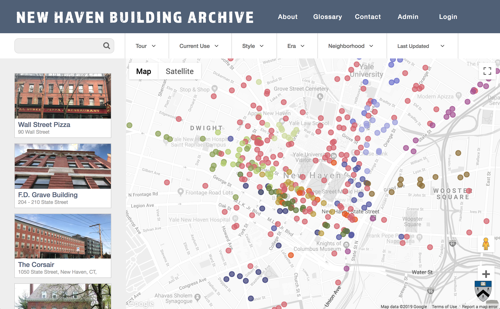

There is so much creativity and life in Prof. Rushmeier's research from the many disciplines that she is drawing on. As an Art History
minor it is a pleasure to see her research so steeped in art history and cultural heritage.
In
Building a Digital Model of Michelangelo’s Florentina Pietà it is amazing to see how many benefits computer graphics
technologies can provide to an art historian by making it easier to visualize different scenarios a piece of art may have gone
through. As well as how awareness of the detailed experience of an art historian user informed Prof. Rushmeier's process
when she was drawing on art historian Dr. Wasserman’s current techniques of illuminating the image.
Additionally, in
New Haven Building Archive: A Database for the Collection, Study, and Communication of Local Built Heritage
Prof. Rushmeier referencing Jane Jacobs is perfect because Jane Jacob's research explores how low income areas can organically
re-build based on how much their structure allows for a community to grow (unsustainable low income high rises vs. sprouting
small buildings) and in this article Prof. Rushmeier is trying to highlight and reinvigorate the value of hidden “ordinary”
cultural gems in the city of New Haven.
Also, I see the NHBA tool Prof. R has built as an extension of Jane Jacob's discoveries and useful for further researchers inspired by
Jacobs. For example when the article says ‘NHBA has opened up a number of venues on the
question of multi-family housing’ and how the ‘variety of entries produced for the building archive also allows
researchers….to gain a broad perspective on the emergence of the modern city’ (page 4).
Furthermore, the design and development goal of the NHBA was to have users contemplate broad relationships of adjacent
buildings and the public space. The many disciplines drawn on for the research to create the NHBA is a mirror of contemplating
broad relationships.
The paper mentions that the platform of the NHBA was chosen in order to facilitate urban exploration
and this is delightfully evident in the usability on a phone, being able to create your own tour,
and catchiness of the personality in student choices for buildings (i.e. Yale Secret Societies, Demolished, Bottle Shop tags).
The plans for future development, i.e. virtual exhibitions and story telling support similar to the
science stories project, sounds like a fun way to engage the viewer with their surroundings.
I wonder if the current Yale Art Gallery application could contribute to this project as a template for leading the public
through an individual tour. Although, the Yale Art Gallery application makes use of the place-markers labeling each art
piece; whereas, for the NHBA there may be obstacles in the tour
being outside the confines of one building.
I am also curious to see how the NHBA will evolve through advances in data visualization.
For more information... http://graphics.cs.yale.edu/site/people/holly-rushmeier